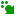
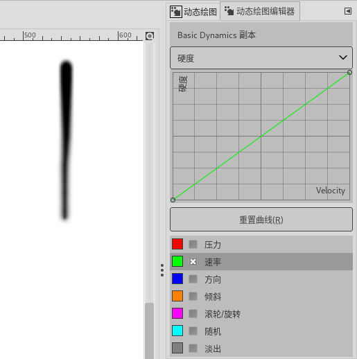
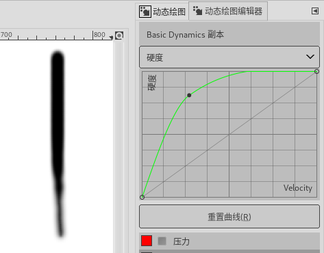
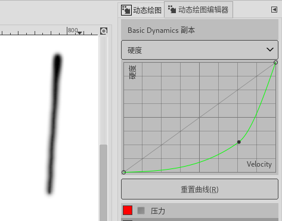
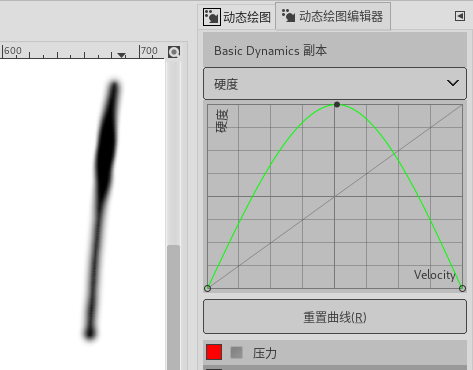
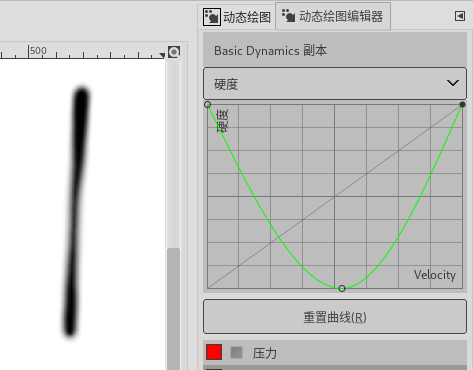

(可停靠对话框→动态绘图编辑器)
没有快捷键。
可停靠对话框→动态绘图编辑器
动态绘图编辑器中(  )可以自定义动态的参数，创建自定义动态。
{kind=link}
GIMP自带的预设动态不允许修改，所以，最快捷的方法是在 动态绘图对话框 中复制一个已有的动态，然后对这个副本进行修改，最后保存为新的自定义动态。
(动态绘图功能主要是为了使用绘图板而创建的，但有一些动态绘图功能也可以用在鼠标上)
“映射矩阵”上方是动态的名称，可以修改。
映射矩阵
映射矩阵设定笔刷的哪些参数可以被手写笔的哪些行为影响。GIMP官方的建议是，您可以启用任意数量的参数和参数组合，但越少越好。阵列中：
横向第一行7个条目是手写笔的行为方式：压力、速率、方向、倾斜、滚轮/旋转、随机、淡出；
纵向第一列11个条目是笔刷的参数：不透明度、大小、角度、颜色、硬度、力度、宽高比、间距、速率、流量、抖动；
例如，压力与不透明度的交叉处被打叉，表示手写笔的压力会影响笔刷的不透明度：绘画时，手写笔压力越大，画出的线条越不透明；压力越小，线条越透明。
而压力右侧的“速率”与不透明度的交叉处没被打叉，表示手写笔的移动速度不会影响笔刷的不透明度：绘画时，手写笔移动速度变快或变慢，不透明度均保持不变。
手写笔的7个行为方式
压力：手写笔压在绘图板上的力量大小。此行为对鼠标无效。
速率：手写笔移动的速度。此行为对鼠标有效。
方向：手写笔移动的方向。此行为对鼠标有效。
倾斜：手写笔压在绘图板上时倾斜的角度。此行为对鼠标无效。
滚轮/旋转：手写笔的旋转设置。此行为对鼠标无效。
随机：相应的参数会产生随机变化。此行为对鼠标有效。
淡出：通过工具选项中的“动态选项”的设置来影响淡入淡出效果。此行为对鼠标有效。
笔刷的11个参数
不透明度：手写笔画出的笔迹的不透明度：
1.1. 压力：手写笔按压力度越大，笔迹越不透明。对鼠标无效1.2. 速率：手写笔移动速度越快，笔迹越透明。对鼠标有效。1.3. 方向：手写笔移动的方向会对不透明度产生影响，有一定随机性。对鼠标有效。1.4. 倾斜：手写笔倾斜的角度会对不透明度产生影响。对鼠标无效1.5. 滚轮/旋转：(待GIMP官方更新)1.6. 随机：笔迹的不透明度会在工具选项中的“不透明度”滑块设置的范围内随机变化。对鼠标有效。1.7. 淡出：手写笔的笔迹从完全透明开始，以工具选项中的“不透明度”滑块设置的不透明度结束。对鼠标有效。
大小：手写笔画出的笔迹的宽度：
2.1. 压力：手写笔按压力度越大，笔迹的宽度越宽。对鼠标无效2.2. 速率：手写笔移动速度越快，笔迹的宽度越窄。对鼠标有效。2.3. 方向：手写笔移动的方向会对笔迹的宽度产生影响，有一定随机性。对鼠标有效。2.4. 倾斜：手写笔倾斜的角度会对笔迹的宽度产生影响。对鼠标无效2.5. 滚轮/旋转：(待GIMP官方更新)2.6. 随机：笔迹的宽度会在工具选项中的“大小”滑块设置的范围内随机变化。对鼠标有效。2.7. 淡出：笔迹的宽度会从较窄尺寸淡出到工具选项中的“大小”滑块设置的尺寸。对鼠标有效。
角度：(待GIMP官方更新)
颜色：此条目未激活时，笔迹的颜色会使用工具箱中的前景色；激活后，笔迹会从当前活动渐变中提取颜色：
4.1. 压力：(待GIMP官方更新)4.2. 速率：手写笔移动速度比较慢时，笔迹的颜色会从活动渐变的右侧提取；速度变快时，颜色的提取位置会向渐变的左侧移动。对鼠标有效。4.3. 方向：手写笔移动的方向会对笔迹的颜色产生影响，有一定随机性。对鼠标有效。4.4. 倾斜：(待GIMP官方更新)4.5. 滚轮/旋转：(待GIMP官方更新)4.6. 随机：笔迹的颜色从活动渐变上随机提取。对鼠标有效。4.7. 淡出：工具选项中，“动态选区”中的“淡出长度”为0时，笔迹的颜色会从活动渐变的右侧提取，之后固定不再变化；
工具选项中，“动态选区”中的“淡出长度”不为0时，笔迹的颜色会从活动渐变的左侧开始提取，之后按长度比例，提取位置向渐变的右侧移动；
对鼠标有效。
硬度：笔迹边缘的模糊程度，仅对模糊笔刷有效：
5.1. 压力：(待GIMP官方更新)5.2. 速率：手写笔移动速度越快，笔迹越模糊。对鼠标有效。5.3. 方向：(待GIMP官方更新)5.4. 倾斜：(待GIMP官方更新)5.5. 滚轮/旋转：(待GIMP官方更新)5.6. 随机：笔迹的模糊程度随机变化。对鼠标有效。5.7. 淡出：工具选项中，“动态选区”中的“淡出长度”为0时，笔迹的模糊程度不发生变化；
工具选项中，“动态选区”中的“淡出长度”不为0时，笔迹的模糊程度从比较模糊变得不太模糊；
对鼠标有效。
力度：(待GIMP官方更新)
宽高比：工具选项中的 宽高比 不为0时生效。宽高比<0时，仅宽度会发生变化，高度不会变化；宽高比>0时，仅高度会发生变化，宽度不会变化：
7.1. 压力：(待GIMP官方更新)7.2. 速率：手写笔移动速度会对宽度比产生影响。对鼠标有效。7.3. 方向：手写笔移动方向会对笔迹的宽高比产生影响，有一定随机性。对鼠标有效。7.4. 倾斜：(待GIMP官方更新)7.5. 滚轮/旋转：(待GIMP官方更新)7.6. 随机：笔迹的宽高比随机变化。对鼠标有效。7.7. 淡出：工具选项中，宽高比>0时，笔迹的高度从全高淡出到宽高比设置的高度；
工具选项中，宽高比<0时，笔迹的宽度从全宽淡出到宽高比设置的宽度；
对鼠标有效。
间距：绘制连续线时，相邻笔刷之间的距离：
8.1. 压力：(待GIMP官方更新)8.2. 速率：手写笔移动速度会越快，间距越大。对鼠标有效。8.3. 方向：手写笔移动方向会对间距产生影响，有一定随机性。对鼠标有效。8.4. 倾斜：(待GIMP官方更新)8.5. 滚轮/旋转：(待GIMP官方更新)8.6. 随机：间距随机变化。对鼠标有效。8.7. 淡出：间距从较大的值开始，之后间距逐渐变小。对鼠标有效。
速率：基于时间的效果变化(例如，绘画工具在一个位置按住不松手，按住的时间长短会导致效果不同)，适用于喷枪工具、模糊/锐化工具、涂抹工具，具体变化取决于工具选项底部“速率”的设置。
流量：适用于喷枪工具和涂抹工具，决定单位时间内输送的涂料的数量，具体取决于工具选项底部“流量”的设置。
抖动：笔刷偏离手写笔移动轨迹的距离。绘画过程中，笔刷连接在一起成为一条“线条”，抖动会导致笔刷在手写笔移动轨迹上垂直于轨迹来回跳动。跳动的幅度由“计数”决定。
11.1. 压力：起始值由“计数”决定，压力越大，跳动的幅度越小。对鼠标无效。11.2. 速率：起始值由“计数”决定，速度越快，跳动的幅度越小。对鼠标有效。11.3. 方向：手写笔移动方向会跳动的幅度产生影响，有一定随机性。对鼠标有效。11.4. 倾斜：(待GIMP官方更新)11.5. 滚轮/旋转：(待GIMP官方更新)11.6. 随机：跳动的幅度随机变化。对鼠标有效。11.7. 淡出：跳动的幅度从0开始，到达“计数”值后结束。对鼠标有效。
笔刷参数曲线调整
对话框中，点击“映射矩阵”右侧的( )按钮，会打开一个下拉列表，列表内是11个笔刷参数。选中其中一个参数，可以对其曲线进行调整。下面的示例主要用来帮助理解曲线的功能(笔刷选择 2.Hardness 075)：
{kind=link}
11个笔刷参数中，我们以硬度参数为例，看一下手写笔移动速率对笔迹硬度的影响，先看一下原始状态：
手写笔移动速率对笔迹硬度的影响 原始状态
1.1. 截图中坐标系上方“硬度”表示当前显示的曲线是硬度曲线；1.2. 截图纵坐标代表硬度，横坐标代表手写笔移动速率；1.3. 截图中坐标系下方的“重置曲线”按钮可以把被修改的曲线重置为初始状态；1.4. 截图中坐标系下方的压力、速率、方向、倾斜、滚轮/旋转、随机、淡出表示手写笔的7个行为方式；1.5. 截图中手写笔的7个行为方式的最左侧使用了不同的颜色方块，表示坐标系中相应曲线的颜色，用来相互区分；1.6. 截图中手写笔的7个行为方式的颜色方块与行为名称之间的打叉复选框是“速率”，表示当前显示的硬度曲线与手写笔移动速率相关，与其它6个行为相关的曲线被隐藏；所以，当前曲线是手写笔移动速率对笔迹硬度的影响；1.7. 截图左边显示的纵向笔迹，是初始状态下手写笔移动速率对笔迹硬度的影响效果；此时曲线未做调整，请参考坐标系中那条绿色斜向直线；1.8. 截图左边显示的纵向笔迹，从上到下，手写笔移动速率越快，笔迹越模糊；
曲线调整示例一：绿色曲线中间位置点击并向左上拖动到截图位置：
手写笔移动速率对笔迹硬度的影响 示例一
截图中左边显示的纵向笔迹与 原始状态 截图相比，从不模糊到模糊的变化比较慢且突然，不如 原始状态 那么平滑；
曲线调整示例二：绿色曲线中间位置点击并向右下拖动到截图位置：
手写笔移动速率对笔迹硬度的影响 示例二
截图中左边显示的纵向笔迹与 原始状态 截图相比，从上到下，从不模糊到模糊的变化比较快(看不出突然)；
曲线调整示例三：绿色曲线调整为波峰形状：
手写笔移动速率对笔迹硬度的影响 示例三
截图中左边显示的纵向笔迹与 原始状态 截图相比，从上到下，模糊变化为：先是模糊，然后到不模糊，再到模糊；
曲线调整示例四：绿色曲线调整为波谷形状：
手写笔移动速率对笔迹硬度的影响 示例四
截图中左边显示的纵向笔迹与 原始状态 截图相比，从上到下，模糊变化为：先是不模糊，然后到模糊，再到不模糊；
上面的示例是硬度参数曲线的调整，另外10个笔刷参数同理。